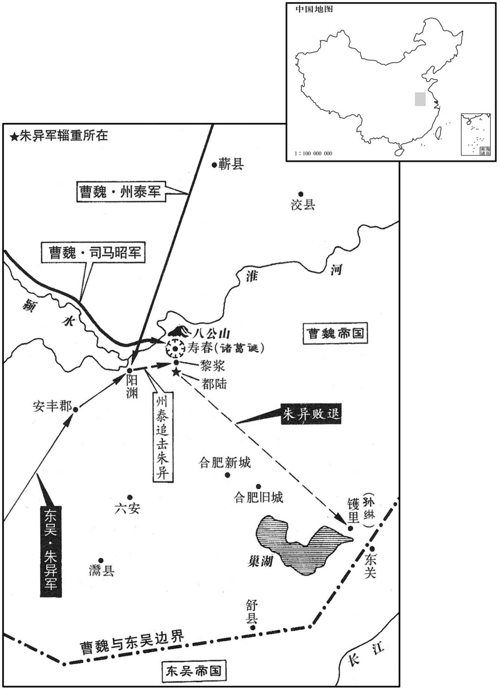

公元257年资治通鉴：本年记事、原文与白话对照
按原书编年位置阅读；追叙和史论不等于本年发生的事件。白话采用所据译本，缺译不以生成译文补齐。
卷77 · 本年记事
公元257年 · 魏烈祖明皇帝甘露二年
二年〔（丁丑、二五七）〕
上传原文的注释括号有异常，字符原样保留；无法可靠划分的段落默认全文显示。
本年事件索引（现代整理）

本年形势与背景参考图
春，三月，大梁成侯卢毓卒。
春季，三月，大梁成侯卢毓去世。
夏，四月，吴主临正殿，大赦，始亲政事。孙綝表奏，多见难问，〔难，乃旦翻。〕又科兵子弟十八已下、十五以上三千余人，〔科，程也；程其长短小大也。或曰：「科」，当作「料」，音聊，量度也。〕选大将子弟年少有勇力者，使将之，〔少，诗照翻。将，即亮翻。〕日于苑中教习，曰：「吾立此军，欲与之俱长。」〔长，可丈翻；今知两翻。〕又数出中书视大帝时旧事，问左右侍臣曰：「先帝数有特制，〔特制，谓等出上意，以手诏宣行也。数，所角翻。〕今大将军问事，〔问事，犹言奏事；不言奏事；不言奏者，自卑挹之意。〕但令我书可邪﹖」〔书可，画可也。〕尝食生梅，使黄门至中藏取蜜，〔中藏，中藏府也，掌币帛金银诸货物。蜜，蜂据也。藏，徂浪翻；下同。〕蜜中有鼠矢；召问藏吏，藏吏叩头。吴主曰：「黄门从尔求蜜邪﹖」吏曰：「向求，〔谓向者尝求蜜也。〕实不敢与。」黄门不服。吴主令破鼠矢，矢中燥，因笑谓左右曰：「若矢先在蜜中，中外当俱湿；今外湿里燥，此必黄门所为也。」结之，果服；〔诘，去吉翻。〕左右莫不惊悚。
夏季，四月，吴王亲临正殿，实行大赦，开始亲自执政。孙的上表奏章，多次受到他的质问，又选兵士子弟十八岁以下、十五岁以上的三千多人，选大将子弟中勇武有力的，让他们领兵，每天都在苑囿中练兵习武，他说：“我建立这支军队，是想和他们一起成长。”他还多次拿出府藏书册阅览先帝时的旧事，问左右侍臣说：“先帝常常亲自书写诏书，而如今大将军奏事，为什么只让我签字认可呢？”他要生吃酸梅，让黄门到库里去取蜂蜜，蜜中有鼠屎；就召来守库官询问，守库官叩头谢罪。吴王说：“黄门从你那儿要过蜂蜜吗？”守库官说：“以前曾要过，我没敢给他。”黄门不服。吴王让人破开鼠屎，屎中是干燥的，于是他大笑着对左右说：“如果鼠屎事先就在蜜中，那么里外都应是湿的，现在外面湿而里面干燥，这必定是黄门放进去的。”诘问黄门，他果然服了罪。左右之人都很震惊恐惧。
征东大将军诸葛诞素与夏侯玄、邓扬等友善，玄等死，〔玄死见上卷正元年。扬死见七十五卷邵陵厉公喜平元年。扬，余章翻，又余亮翻。〕王凌、毌丘俭相继诛灭，〔王凌死见七十五卷喜平三年。毌丘俭死见上卷正元二年。〕诞内不自安，乃倾帑藏振施，〔帑，他朗翻。施，式智翻。〕曲赦有罪以收众心，畜养扬州轻侠数千人以为死士。〔畜，许六翻。〕因吴人欲向徐堨，〔徐堨，即徐塘，在东关之东。堨，乌葛翻。〕请十万众以守寿春，又求临淮竽城以备吴寇。司马昭初秉政，长史贾充请遣参佐慰劳四征，〔魏置征东将军屯淮南，征南将军屯襄、沔以备吴；征西将军屯关、陇以备蜀；征北将军屯幽、并以备鲜卑；皆授以重兵。司马昭初当国，故充请慰劳以观其志趣。劳，力到翻。〕且观其志。昭遣充至淮南，充见诞，论说时事，因曰：「洛中诸贤，皆愿禅代，君以为如何﹖」诞厉声曰：「卿非贾豫州子乎﹖〔充父逵，先为豫州而卒，故称之。〕世受魏恩，岂可欲以社稷输人乎！若洛中有难，〔难，乃旦翻。〕吾当死之。」充默然；还，言于昭曰：「诸葛诞再在扬州，〔诞先督扬州，东关之败，改督豫州，毌丘俭既死，复督扬州。〕得士众心。今召之，必不来，然反疾而祸子；不召，则反迟而祸大，不如召之。」昭从之。甲子，诏以诞为司空，召赴京师。诞得诏书，愈恐，疑扬州刺史乐綝间己，遂杀綝，〔征东将军与扬州刺史同治寿春。魏四征之任，率以其州刺史为储帅，故诞疑綝间己。间，古苋翻。〕敛淮南及淮北郡县屯田口十余万官兵，〔魏郡县皆置屯田，凡屯田口悉官兵也。〕扬州新附胜兵者四五万人，〔胜，音升。〕聚榖足一年食，为闭门自守之计。遣长史吴纲将少子靓至吴，〔将，如字。少，诗照翻。〕靓，疾郢翻，又疾正翻。〕称臣请救，并请以牙门子弟为质。〔牙门，诸将之子弟也。质，音致。〕
征东大将军诸葛诞平时与夏侯玄、邓等人关系亲密，夏侯玄等人死了，王凌、丘俭等也相继被诛杀，诸葛诞内心很不安，于是就尽量拿出官府库中的财物广泛地赈济施舍，又屈法赦免那些有罪之人以收买众人之心，还蓄养了扬州的轻捷侠客数千人当做护卫自己的敢死队。因为吴国人想要攻打徐，诸葛诞就请求率十万兵众去守卫寿春，又要求滨临淮水建筑一座城以防备吴人进犯。司马昭刚刚执掌朝政，长史贾充建议派遣部下去慰劳征东、征南、征西、征北四将军，并观察他们的志趣、动向。司马昭派贾充到了淮南，贾充见到诸葛诞，一起谈论时事，贾充说道：“洛中的诸位贤达之人，都希望实行禅让，您认为如何？”诸葛诞严厉地说：“你不是贾豫州的儿子吗？你家世代受到魏国的恩惠，怎能想把国家转送他人？如果洛中发生危难，我愿为国家而死。”贾充默然无语。回来之后，贾充对司马昭说：“诸葛诞再次到扬州后，深得士众之心。如今召他来，他必然不来，还会反叛，但早反叛祸害不大；如果不召他来，那么晚反叛祸害就大了，因此不如召他来。”司马昭采纳了这个意见。甲子（二十四日），诏令任命诸葛诞为司空，并召他往赴京师。诸葛诞得到诏书，更加恐惧，怀疑是扬州刺史乐离间自己，于是就杀掉乐，聚集了在淮南及淮北郡县屯田的十余万官兵和扬州地区新招募的身强力壮的兵士四五万人，又聚集了足够食用一年的粮食，作了闭门自守的长期准备。又派遣长史吴纲带着他的小儿子诸葛靓到吴国，向吴王称臣请求救援，并请求再让部下将士的子弟当做人质。
吴滕胤、吕据之妻，皆夏口督孙壹之妹也。〔壹，孙奂庶子也。夏，户雅翻。〕六月，孙綝使镇南将军朱异自虎林将兵袭壹。异至武昌，壹将部曲来奔。乙巳，诏拜壹车骑将军、交州牧，封吴侯，闰府辟召，仪同三司，衮冕赤舄，事从丰厚。〔崇异孙壹者，以招携贰也。〕
吴国滕胤和吕据之妻，都是夏口督孙壹的妹妹。六月，孙派镇南将军朱异从虎林领兵去袭击孙壹。朱异到武昌时，孙壹率领部曲前来投奔。乙巳（初六），朝廷下诏任命孙壹为车骑将军、交州牧，封为吴侯，开建府署征召僚属，仪同三司，又赐给帝王服用的全套服饰，各种事情都给予丰厚待遇。
司马昭奉帝及太后讨诸葛诞。〔昭若自行，恐后有挟两宫为变者，故奉之以讨诞。〕
司马昭侍奉魏帝和太后共同去讨伐诸葛诞。
吴纲至吴，吴人大喜，使将军全怿、全端、唐咨、王祚将三万众，与文钦同救诞；以诞为左都护，假节、大司徒、骠骑将军、青州牧，封寿春侯。择，琮之子；端，其从也。
吴纲到了吴国，吴人大喜，派将军全怿、全端、唐咨、王祚等人领兵三万人，与文钦一起去救援诸葛诞；任命诸葛诞为左都护，持符节、大司徒、骠骑将军、青州牧，并封为寿春侯。全怿是全琮之子，全端是全琮之侄。
六月，甲子，车驾次项，司马昭督诸军二十六万进屯丘头，〔是役也，司马昭改丘头曰武丘，以旌武功。武丘，唐为沈丘县。〕以镇南将军王基行镇东将军、都督扬．豫诸军事，与安东将军陈骞等围寿春。基始至，围城未合，文钦、全怿等从城东北，因山乘险，得将其众突入城。〔寿春城外他无山唯城北有八公山耳。〕昭敕基敛军坚壁。基累求进讨，会吴朱异率三万人进屯安丰，为文钦外势，〔安丰县，汉属卢江郡，魏分属安丰郡。今安丰县在寿春南八十里。〕诏基引诸军转据北山。基谓诸将曰：「今围垒转兵马向集，但当精修守备以待越逸，而更移兵守险，使得放纵，虽有智者，不能善其后矣！」遂守便宜，上疏曰：「今与贼家对敌，当不动如山，若迁移依险，人心摇荡，于势大损。诸军并据深沟高垒，众心皆定，不可倾动，此御兵之要也。」书奏，报听。〔报基听行其策。时帝在军，故诸军节度皆禀诏指，而裁其可否者实司马昭也。〕于是基等四面合围，长里再重，〔重，直龙翻。〕堑垒甚峻。文钦等数出犯围，〔数，所角翻。〕逆击，走之。司马昭又使奋武将军监青州诸军事石苞〔监，古衔翻。〕督兖州刺史州泰、徐州刺史胡质简锐卒为游军，以备外寇。泰击破朱异于渊，〔水经注：决水出卢雩娄县北，过安丰县东，又北右会阳泉水。水西有阳泉县故城，故阳泉乡也，汉灵帝封黄琬为侯国。决水又北入于淮。〕异走，泰追之，杀伤二千人。
六月，甲子（二十五日），魏帝车驾到达项县，司马昭率诸军二十六万人进驻丘头。让镇南将军王基为行镇东将军，都督扬、豫诸军事，并与安东将军陈骞等人围攻寿春。王基刚到寿春，包围圈还未形成时，文钦、全怿等人从城东北凭借险要的山势，才得以率领军队突入城中。司马昭命令王基聚拢军队坚守壁垒不与敌人交战。王基屡次要求进攻，恰好吴国的朱异率领三万人进驻安丰，成为文钦的外部接应势力，诏令王基率领诸军转移占据北山。王基对诸将说：“如今包围的营垒已经坚固了，兵马也近于集中，此时只应精心整治守备力量以等待敌人突围逃跑，但是却命令我们转移兵力把守险要之地，使城内敌人得以放纵，如果这样做，即使有聪明之人，也不能很好地处理以后的战事！”于是就坚持有利的做法继续包围寿春，同时又上疏说：“如今与敌人对峙，我们就像山那样岿然不动，如果转移部队依据险要，人心就会动荡不安，对于形势有很大损害。各军都已据守深沟高垒的营盘，众心都已稳定，不可再加以动摇，这是治军的要领。”上奏章之后，回报说同意王基的意见。于是王基等人四面合围，形成里外两层包围圈，深沟高垒的防御工事非常坚固。文钦等人多次出城企图突破包围，都受到迎面还击而逃回。司马昭又派奋武将军监青州诸军事石苞统领兖州刺史州泰、徐州刺史胡质的轻装精锐士卒作为游动军队，以防备外面的敌兵。州泰在阳渊击败了朱异，朱异逃走，州泰在后面追赶，杀伤了敌兵二千人。
秋，七月，吴大将军綝大发兵出屯镬里，〔后吴王责孙綝以留沽月中不上岸一步，则镬里当在巢县界。〕复遣朱异帅将军丁奉、黎斐等五入前解寿春之围。〔复，扶又翻。帅，读曰率。〕异留辎重于都陆，〔水经注：博乡县，王莽改曰杨陆，泄水水出焉，北过芍陂，又西北入于淮。意者都陆即杨陆欤﹖又据晋纪，都陆在黎浆南。重，直用翻。〕进屯黎浆，〔水经注：芍陂渎水东注黎浆水，水东径黎浆亭南，又东注肥水，谓之黎浆水口也。〕石苞、州泰又击破之。太山太守胡烈以奇兵五千袭都陆，尽焚异资粮，异将余兵食葛叶，走归孙綝；綝使异更死战，异以士卒乏食，不从綝命。綝怒，九月，己巳，綝斩异于镬里。辛未，引兵还建业。〔寿春之围已固，虽使周瑜、吕蒙、陵逊复生，不能解也。若孙綝能举荆、扬之众山襄阳以向宛、洛，寿春城下之兵必分归以自救，诸葛诞、文钦等于此时决围力战，犹庶几焉。〕綝既不能拔出诸葛诞，而丧败士众，〔丧，息浪翻。败，补迈翻。〕自戮名将，由是吴人莫不怨之。〔为后吴诛孙綝张本。〕
秋季，七月，吴国大将军孙出动众多兵力驻扎在镬里，又派朱异率将军丁奉、黎斐等五人前去解寿春之围。朱异把辎重粮草留在都陆，进驻黎浆，石苞、州泰又击败了他。太山太守胡烈率奇兵五千人偷袭了都陆，全部焚毁了朱异的物资粮草，朱异率领剩余兵力吃着葛叶，逃归孙处；孙让朱异再次拼死出战，朱异以士卒缺乏粮食为由，不服从孙的命令。孙大怒，九月，己巳（初一），孙在镬里杀了朱异。辛未（初三），领兵回到建业。孙既不能救出诸葛诞，而且又伤亡了大量士卒，还杀戮自己的名将，因此吴人没有不怨恨他的。
司马昭曰：「异不得至寿春，而吴人杀之，非其罪也，〔【章：甲十一行本作「非其罪也，而吴人杀之」；乙十一行本同；退斋校同；张校同，云无注本亦同，下「非其罪也」四字衍。】〕欲以谢寿春而坚诞意，使其犹望救耳。今当围，备其越逸，而多方以误之。」乃纵反间，〔间，古苋翻。〕扬言「吴救方至，大军乏食，分遣羸疾就榖淮北，劫不能久。」诞等益宽恣食，俄而城中乏粮，外救王至。将军蒋班、焦彝，皆诞腹心谋主也，言于诞曰：「朱异等以大众来而不能进，孙綝杀异而归江东，外以发兵为名，内实坐须成败。〔须，待也。〕今宜及众心尚固，士卒思用，并力决死，攻其一面虽不能尽克，犹有可全者，空坐守死，无为也。」〔言石若决死而求生，无为坐守而待毙。〕文钦曰：「公今举十余万之众归命于吴，而钦与全端等皆同居死地，公兄子弟尽在江表，就孙綝不欲来，主上及其亲戚岂肯听乎！且中国无岁无事，军民并疲，今守我一年，内变将起，柰何舍此，〔舍，读曰舍。〕欲乘危徼幸乎！」〔徼，坚尧翻。〕班、彝固劝之，钦怒。诞欲杀班、彝，二人惧，十一月，弃诞踰城来降。全怿兄子辉、仪在建业，〔辉仪，怿兄全绪之二字；「辉」，一作「祎」。〕与其家内争讼，携其母将部曲数十家来奔。于是怿与兄子靖及全端弟翩、缉皆将兵在寿春城中，司马昭用黄门侍郎锺会策，密为辉、仪作书，〔为，于伪翻。〕使辉仪所亲信赍入城告怿等，说「吴中怒怿等不能拔寿春，〔言不能拔寿春之众于重围也。〕欲尽诛诸将家，故逃来归命。」十二月，怿等帅其众数千人开门出降，〔帅，读曰率。降，户江翻。〕城中震惧，不知所为。诏拜怿平东将军，封临湘侯端等封拜名有差。
司马昭说：“朱异不能到达寿春，不是他的罪过，但吴人却杀了他，这是想以此来安抚寿春的将士而坚定诸葛诞守城的意志，让他仍然盼望着救兵。如今应加强包围，防备他们突围逃跑，而且要想方设法使他们判断失误。”于是到处放风行反间之计，扬言说：“吴国救兵就要到了，魏国的大军缺乏粮食，要分散派遣病弱的士卒到淮北去吃那里的粮食，看形势围攻不会太久了。”诸葛诞等人更加放宽心任意吃粮，没过多久城中粮食告乏，而外边的救兵仍然未到。将军蒋班、焦彝，都是诸葛诞的心腹主谋之人，此时对诸葛诞说：“朱异等人率众多兵力前来而不能进城，孙杀掉朱异而回到江东，表面上是以发救兵为名，内里实际上是要坐等成败。如今应趁众人之心还能稳定，士卒愿意效力，集中力量拼死命攻其一面，尽管不能获全胜，仍有可能保全部队实力，如果空坐这里死守，是没有出路的。”文钦说：“您如今率领十余万士卒来归附于吴国，而我与全端等人都与您共同居于死地，我们的父兄子弟都在江南，即使孙不想来，而主上及其亲戚又怎么肯听他的呢？而且魏国没有一年是没事的，军民都很疲惫，如今他们围守我们一年，内变就将兴起，为什么我们要舍弃这里而想冒着危险侥幸一战呢？蒋班、焦彝仍坚持劝他，文钦十分恼怒。诸葛诞要杀掉蒋班、焦彝，二人非常害怕，十一月，他们背弃诸葛诞越过城墙来投降。全怿哥哥的儿子全辉、全仪在建业，与家内之人发生争执，就带着母亲率领部曲数十家来投奔魏国。此时全怿与其兄之子全靖以及全端之弟全翩、全缉都领兵在寿春城中，司马昭采用黄门侍郎钟会的计策，秘密地替全辉、全仪写了书信，并让全辉、全仪的亲信之人送入城中告诉全怿等人，说：“吴国朝廷恼怒全怿等人不能击败包围寿春的敌兵，而想要杀尽诸将的家属，因此跑出来归顺魏国。”十二月，全怿等人率领手下兵将数千人开城门出来投降，城中的人十分震恐，不知怎么办好。诏令任命全怿为平东将军，封临湘侯，全端等人的拜官封职各有差等。
汉姜维闻魏分关中兵以赴淮南，欲乘虚向秦川，〔秦地四塞以为固，渭水贯其中。渭川左右，沃壤千里，世谓之秦川。〕率数万人出骆谷，至沈岭。时长城积谷甚多，而守兵少，征西将军都督雍、凉诸军事司马望〔雍，于用翻。〕及安西将军邓艾进兵据之，以拒维。维壁于芒水，〔水经注：骆谷水出郿坞东南山骆谷，北流径长城西，又北流注于渭，渭水又东，芒水从南来注之；水出南山芒谷，北径盩厔县竹圃中，又北流注于渭。余按骆谷在今洋州真符县，屈回八十里，凡八十四盘。〕数挑战，〔数，所角翻。挑徒了翻。〕望、艾不应。
蜀汉的姜维听说魏国分出关中的兵力去支援淮南，想乘虚攻向秦川，于是就率领数万人出骆谷，到达沈岭。当时长城一带积存的粮食很多，而守兵很少，征西将军都督雍州、凉州诸军事司马望和安西将军邓艾就进兵占据了那里，以抵挡姜维。姜维筑营垒于芒水一带，多次出来挑战，而司马望、邓艾不应战。
是时，维数出兵，蜀人愁苦，中散大夫谯周作仇国论以讽之〔续汉志曰：中散大夫，秩六百石；汉官曰：秩比二千石。胡广曰：光禄大夫，本为中大夫，武帝元狩五年，置谏大夫为光禄大夫，世祖中与，以为谏议大夫。又有太中、中散大夫。此四等于古者为天子之下大夫，视列国之上卿。〕曰：「或问往古能以弱胜强者，其术如何﹖曰：吾闻之，处大无患者常多慢，处小有忧者常思善；〔处，昌吕翻。〕多慢则生乱，思善则生治，理之常也。故周文养民，以少取多，句践恤众，以弱毙强，此其术也。〔文王治岐，由方百里起，三分天下有其二，所谓以少取多也。句践归越，吊死问疾，十年生聚，十年教训，以弱越毙强吴。〕或曰：曩者，项强汉弱，相与戢争，项羽与汉约分源沟，各归息民，张良以为民志已定，则难动也，率兵追羽，终毙项氏。〔事见十卷汉高帝四年。〕岂必由文王之事乎﹖曰：当商、周之际，王侯世尊，〔言世世居尊位也。〕君臣久固，民习所专；〔民习见君臣之分明，故专于戴上。〕深根者难拔，据固者难迁。当此之时，虽汉祖安杖剑鞭马而取天下乎！及秦罢侯置守之后，〔谓罢列国诸侯分置三十六郡郡置守也。〕民疲秦役，王下土崩，或岁易主，或月易公，鸟惊兽骇，莫知所从，于是豪强并争，虎裂狼分，疾搏者获多，迟后者见吞。今我与彼皆传国易世矣，既非秦末鼎沸之时，车铕六国并据之势，故可为文王，难为汉祖。夫民之疲劳，则骚扰之兆生，上慢下暴，则瓦解之形起。谚曰：『射幸收跌，不如番发。』〔跌，差也，射数差而不中，不如审而后发也。书曰：若虞机张，往省括于度则释。〕是故智者不为小利移目，不为意似改步，〔孔颖达曰：举足谓之步。为，于伪翻。〕时可而后动，数合而后举，故汤、武之师不再战而克，〔汤伐桀，鸣条一战，而革夏命；武王伐纣，一戎衣而天下大定。〕诚重民劳而度时审也。〔度，徒洛翻。〕如遂极武黩征，征伐不欲数，数则黩。〕土崩势生，不幸遇难，〔难，乃旦翻。〕虽有智者将不能谋之矣。」〔姜维以数战亡蜀，卒如谯周之言。〕
当时，姜维屡次出兵征战，蜀人愁苦不堪，中散大夫谯周作《仇国论》以讽谏说：“有人问古代能以弱胜强者，他们的方法如何？曰：我听说，处于大国地位而无祸患者常常多有轻慢，处于小国地位而有忧虑者常常想着向善；怠轻之事多就会出现内乱，想着向善就能使国家安定，这是普遍的道理。因此周文王善于养民，就能以少取多；句践能够抚恤众人，就能以弱胜强，这是他们的方法。有人说：以前，项羽强而汉高祖弱，互相交战，后来项羽与汉高祖约定中分天下以鸿沟为界，各归本土生息养民，张良认为民心一旦安定，就难以再发动，于是率兵追击项羽，终于消灭了他。难道一定要像文王那样行事吗？回答说：在商、周之际，王侯世代尊贵，君臣之分久已稳固，人民已习惯于专心事其君上；深深扎根的东西难以拔除，依托稳固的东西难以迁移。在那个时代，即使是汉高祖又怎能靠持剑策马而夺取天下呢？到秦朝废弃分封侯国设置郡守之后，百姓被秦朝的苦役搞得疲惫不堪，天下已经土崩瓦解，或者每年换个君主，或者每月换个主公，如同鸟兽般惊恐不安，不知所从，于是豪强们并力争夺天下，如狼似虎地撕裂分割，迅速搏杀者所获就多，行动迟缓者就被吞并。如今我们与古代都是经历改朝换代而流传的国家，既不是秦朝末年天下鼎沸纷争的时代，实际上却有六国并立称雄的形势，因此可以行文王之事，难以有汉高祖的作为。百姓的疲劳就是产生骚动不安的前兆；在上位的骄慢而在下位残暴，就会出现土崩瓦解的形势。谚语说：‘射箭如果屡次不中，不如慎重瞄准之后再发射。’因此有智谋的人不为蝇头小利而动心，不为似是而非的情况改变常态，时机成熟以后再行动，形势适宜以后再举兵，所以商汤、周武的军队不用再次战斗就能取胜，实在是因为重视人民的劳苦状况而能审时度势。如果竟然竭尽武力滥用征伐，出现了土崩瓦解的形势，又不幸遭遇危难，那么即使有有智谋的人也将不会有挽回局势的谋略了。”